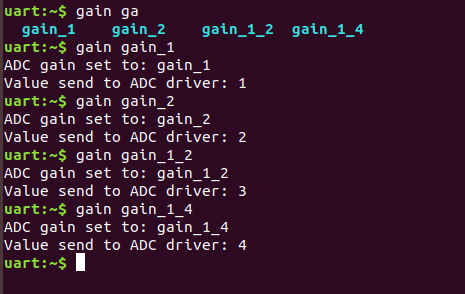
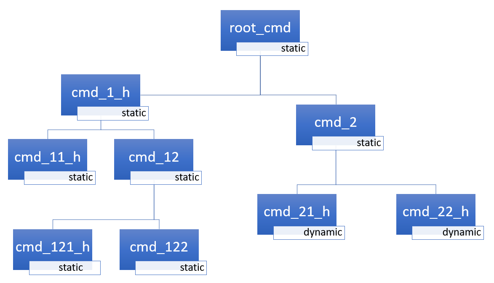

Shell
概述
该模块用于创建和处理带有用户自定义命令集的 shell。在需要比简单按键或 LED 更复杂的用户交互的示例中，可以使用它。该模块是一个类 Unix 的 shell，具有以下功能：
支持多个实例。
与 日志 深度协作。
支持静态命令和动态命令。
支持字典命令。
使用 Tab 键智能补全命令。
内置命令：aliases、clear、shell、colors、echo、history 和 resize。
使用 ↑ ↓ 键或 meta 键查看最近执行的命令。
使用以下按键编辑文本：←、→、Backspace、Delete、End、Home、Insert。
支持 ANSI 转义码：
VT100和ESC[n~，用于光标控制和彩色打印。支持编辑多行命令。
内置用于显示命令帮助的处理程序。
支持通配符：
*和?。支持 meta 键。
支持 getopt 和 getopt_long。
通过 Kconfig 配置优化内存使用。
备注
其中一些功能对 RAM 和 Flash 的占用影响很大，但很多功能在不需要时可以禁用。如果希望默认采用减少 RAM 和 Flash 需求而非追求功能的选项，应启用 CONFIG_SHELL_MINIMAL，然后有选择地只启用所需的功能。
后端
该模块可以连接到任意传输层，用于命令的输入和输出。目前已实现以下传输层：
MQTT
Segger RTT
SMP
Telnet
UART
USB
Bluetooth LE（NUS）
RPMSG
DUMMY——不是物理传输层。
Telnet
启用 CONFIG_SHELL_BACKEND_TELNET 后，用户可以使用 telnet 作为 shell 后端。可以使用 PuTTY 或任意 telnet 客户端连接。例如：
telnet <ip address> <port>
默认情况下，telnet 客户端不会处理 telnet 命令和配置。不过，可以通过 CONFIG_SHELL_TELNET_SUPPORT_COMMAND 启用命令支持。这样 telnet 客户端可以使用一组非常有限的受支持命令，如有需要仍可开启。它支持的命令选项之一是 ECHO 选项，该选项让客户端处于字符模式（一次一个字符），在这一点上与 UART 后端类似。这会使客户端在每输入一个字符时立即发送，从而显著增加网络流量。以此为代价，它可以启用 shell 的行编辑、Tab 补全 和 历史记录 功能。
USB CDC ACM
要配置 Shell USB CDC ACM 后端，只需在构建中加入代码片段（snippet） cdc-acm-console：
west build -S cdc-acm-console [...]
配置设置的详细信息见以下文件：
Bluetooth LE（NUS）
要配置 Bluetooth LE（NUS）后端，只需在构建中加入代码片段（snippet） nus-console：
west build -S nus-console [...]
配置设置的详细信息见以下文件：
Segger RTT
要配置 Segger RTT 后端，请在构建中加入以下配置：
其他配置设置的详细信息见：samples/subsys/shell/shell_module/prj_minimal_rtt.conf。
使用 west
使用以下命令连接并配置 RTT：
$ west rtt
备注
如果默认的运行器（runner）不支持 RTT，请查看开发板的文档页面，了解是否有其他支持 RTT 的运行器。然后可以使用
--runner选项指定其他运行器。
$ west rtt --runner <runner>
使用 PuTTY
按以下步骤操作：
打开调试会话并继续运行应用程序。
west attach
打开
PuTTY。使用 telnet 端口 19021 和特定的 Terminal 配置。将Local echo设为Force off，将Local line editing设为Force off（见下图）。

现在你应该已经有了一个到 RTT 的网络连接，可以向 shell 输入内容。
通过 TCP 连接到 Segger RTT（例如在 macOS 上）
在 macOS 上，JLinkRTTClient 不允许输入内容。请改用以下步骤：
打开第一个终端窗口并输入：
JLinkRTTLogger -Device NRF52840_XXAA -RTTChannel 1 -if SWD -Speed 4000 ~/rtt.log
（如有需要，请修改设备）
打开第二个终端窗口并输入：
nc localhost 19021
现在你应该已经有了一个到 RTT 的网络连接，可以向 shell 输入内容。但与 PuTTY 不同，某些功能（例如
Tab补全）无法使用。
命令
Shell 命令以树形结构组织，并分为以下几种类型：
根命令（第 0 级）：集中存放在专用内存段中，并按字母顺序排序。
静态子命令（级别 > 0）：数量和语法必须在编译时已知。在软件模块中创建。
动态子命令（级别 > 0）：数量和语法无需在编译时已知。在软件模块中创建。
常用命令组
下面列出了一些有用的命令组及其启用方法：
GPIO
I2C
传感器
Flash
文件系统
ADC
创建命令
使用以下宏添加 shell 命令：
SHELL_CMD_REGISTER- 创建根命令。所有根命令的名称必须互不相同。SHELL_COND_CMD_REGISTER- 有条件地（如果设置了编译时标志）创建根命令。所有根命令的名称必须互不相同。SHELL_CMD_ARG_REGISTER- 创建带参数的根命令。所有根命令的名称必须互不相同。SHELL_COND_CMD_ARG_REGISTER- 有条件地（如果设置了编译时标志）创建带参数的根命令。所有根命令的名称必须互不相同。SHELL_CMD- 初始化一个命令。SHELL_COND_CMD- 如果设置了编译时标志，则初始化一个命令。SHELL_EXPR_CMD- 如果编译时表达式非零，则初始化一个命令。SHELL_CMD_ARG- 初始化一个带参数的命令。SHELL_COND_CMD_ARG- 如果设置了编译时标志，则初始化一个带参数的命令。SHELL_EXPR_CMD_ARG- 如果编译时表达式非零，则初始化一个带参数的命令。SHELL_STATIC_SUBCMD_SET_CREATE- 创建静态子命令数组。SHELL_SUBCMD_DICT_SET_CREATE- 创建字典子命令数组。SHELL_DYNAMIC_CMD_CREATE- 创建动态子命令数组。
可以在系统中任何包含 include/zephyr/shell/shell.h 的文件里创建命令。创建的所有命令对所有 shell 实例都可用。
静态命令
以下示例代码演示了如何创建带有静态子命令的根命令。

/* Creating subcommands (level 1 command) array for command "demo". */
SHELL_STATIC_SUBCMD_SET_CREATE(sub_demo,
SHELL_CMD(params, NULL, "Print params command.",
cmd_demo_params),
SHELL_CMD(ping, NULL, "Ping command.", cmd_demo_ping),
SHELL_SUBCMD_SET_END
);
/* Creating root (level 0) command "demo" */
SHELL_CMD_REGISTER(demo, &sub_demo, "Demo commands", NULL);
字典命令
这是一种特殊的静态命令。每当需要在命令处理程序中使用（字符串 <-> 对应数据）这样的配对时，都可以使用字典命令。字符串通常是对给定数据的文字描述。其思路是把字符串用作 shell 可以提示的命令语法，而对应的数据则用于处理该命令。
举个例子。假设你创建了一个设置 ADC 增益的命令，这正是适合使用字典的地方。字典是一组配对：（string: gain_value, int: value），其中 int 值可以用于 ADC 驱动 API。
这项任务的抽象代码如下：
static int gain_cmd_handler(const struct shell *sh,
size_t argc, char **argv, void *data)
{
int gain;
/* data is a value corresponding to called command syntax */
gain = (int)data;
adc_set_gain(gain);
shell_print(sh, "ADC gain set to: %s\n"
"Value send to ADC driver: %d",
argv[0],
gain);
return 0;
}
SHELL_SUBCMD_DICT_SET_CREATE(sub_gain, gain_cmd_handler,
(gain_1, 1, "gain 1"), (gain_2, 2, "gain 2"),
(gain_1_2, 3, "gain 1/2"), (gain_1_4, 4, "gain 1/4")
);
SHELL_CMD_REGISTER(gain, &sub_gain, "Set ADC gain", NULL);
在 shell 中的效果如下：

动态命令
以下示例代码演示了如何创建带有静态和动态子命令的根命令。开始时动态命令列表为空。可以通过输入以下内容添加新命令：
dynamic add <new_dynamic_command>
新添加的命令可以通过 Tab 键提示或自动补全。

/* Buffer for 10 dynamic commands */
static char dynamic_cmd_buffer[10][50];
/* commands counter */
static uint8_t dynamic_cmd_cnt;
/* Function returning command dynamically created
* in dynamic_cmd_buffer.
*/
static void dynamic_cmd_get(size_t idx,
struct shell_static_entry *entry)
{
if (idx < dynamic_cmd_cnt) {
entry->syntax = dynamic_cmd_buffer[idx];
entry->handler = NULL;
entry->subcmd = NULL;
entry->help = "Show dynamic command name.";
} else {
/* if there are no more dynamic commands available
* syntax must be set to NULL.
*/
entry->syntax = NULL;
}
}
SHELL_DYNAMIC_CMD_CREATE(m_sub_dynamic_set, dynamic_cmd_get);
SHELL_STATIC_SUBCMD_SET_CREATE(m_sub_dynamic,
SHELL_CMD(add, NULL,"Add new command to dynamic_cmd_buffer and"
" sort them alphabetically.",
cmd_dynamic_add),
SHELL_CMD(execute, &m_sub_dynamic_set,
"Execute a command.", cmd_dynamic_execute),
SHELL_CMD(remove, &m_sub_dynamic_set,
"Remove a command from dynamic_cmd_buffer.",
cmd_dynamic_remove),
SHELL_CMD(show, NULL,
"Show all commands in dynamic_cmd_buffer.",
cmd_dynamic_show),
SHELL_SUBCMD_SET_END
);
SHELL_CMD_REGISTER(dynamic, &m_sub_dynamic,
"Demonstrate dynamic command usage.", cmd_dynamic);
命令执行
每个命令或子命令都可以有一个处理程序。shell 执行在命令树中找到的最深层的处理程序，其后的子命令（没有处理程序的）作为参数传入。括号内的字符被视为一个参数。如果 shell 找不到处理程序，就会显示一条错误消息。
也可以在用户应用程序中使用任意活动后端和 shell_execute_cmd() 函数执行命令，如下例所示：
int main(void)
{
/* Below code will execute "clear" command on a DUMMY backend */
shell_execute_cmd(NULL, "clear");
/* Below code will execute "shell colors off" command on
* an UART backend
*/
shell_execute_cmd(shell_backend_uart_get_ptr(),
"shell colors off");
}
设置 Kconfig 选项 CONFIG_SHELL_BACKEND_DUMMY 以启用 DUMMY 后端。
命令执行示例
假设命令结构如下图所示，其中：
root_cmd- 没有处理程序的根命令cmd_xxx_h- 有处理程序的命令cmd_xxx- 没有处理程序的命令

示例 1
序列 root_cmd cmd_1_h cmd_12_h cmd_121_h parameter 将执行命令 cmd_121_h，并把 parameter 作为参数传入。
示例 2
序列 root_cmd cmd_2 cmd_22_h parameter1 parameter2 将执行命令 cmd_22_h，并把 parameter1 parameter2 作为参数传入。
示例 3
序列 root_cmd cmd_1_h parameter1 cmd_121_h parameter2 将执行命令 cmd_1_h，并把 parameter1、cmd_121_h 和 parameter2 作为参数传入。
示例 4
序列 root_cmd parameter cmd_121_h parameter2 不会执行任何命令。
命令处理程序
简单的命令处理程序实现：
static int cmd_handler(const struct shell *sh, size_t argc,
char **argv)
{
ARG_UNUSED(argc);
ARG_UNUSED(argv);
shell_fprintf(sh, SHELL_INFO, "Print info message\n");
shell_print(sh, "Print simple text.");
shell_warn(sh, "Print warning text.");
shell_error(sh, "Print error text.");
return 0;
}
函数 shell_fprintf() 以及 shell 打印宏 shell_print、shell_info、shell_warn 和 shell_error 可以在命令处理程序或线程中使用，但不能在中断上下文中使用。中断处理程序应改用 日志 进行打印。
命令帮助
每个用户定义的命令或子命令都可以有自己的帮助说明。命令和子命令的帮助可以通过相应的宏创建：SHELL_CMD_REGISTER、SHELL_CMD_ARG_REGISTER、SHELL_CMD 和 SHELL_CMD_ARG。
当你使用 -h 或 --help 参数调用命令或子命令时，shell 会打印这条帮助消息。
父命令
在子命令处理程序中，根据对 argv 的索引方式，既可以访问传给命令的参数，也可以访问父命令。
用正数索引
argv时，可以访问参数。用负数索引
argv时，可以访问父命令。处理程序所属的子命令的
argv索引为 0。
static int cmd_handler(const struct shell *sh, size_t argc,
char **argv)
{
ARG_UNUSED(argc);
/* If it is a subcommand handler parent command syntax
* can be found using argv[-1].
*/
shell_print(sh, "This command has a parent command: %s",
argv[-1]);
/* Print this command syntax */
shell_print(sh, "This command syntax is: %s", argv[0]);
/* Print first argument */
shell_print(sh, "%s", argv[1]);
return 0;
}
内置命令
将 CONFIG_SHELL_CMDS 设为 y 即可启用这些命令。
aliases - 显示当前配置的别名。该命令需要额外启用：将
CONFIG_SHELL_CMDS_ALIASES设为y。clear - 清屏。
history - 显示最近输入的命令。
resize - 当终端宽度不是 80 个字符时，或每次更改终端宽度后，都必须执行此命令。它确保多行文本正确显示，并正确处理 ←、→、End、Home 键。目前该命令只在打开 UART 流控时有效。也可以带子命令调用：
default - Shell 会向终端发送终端宽度 = 80，并假定发送成功。
这些命令需要额外启用：将
CONFIG_SHELL_CMDS_RESIZE设为y。select - 可用于设置新的根命令。按 alt+r 退回主命令树。该命令需要额外启用：将
CONFIG_SHELL_CMDS_SELECT设为y。shell - 根命令，包含一些与 shell 相关的实用子命令，例如：
echo - 切换 shell 回显。
colors - 切换语法着色。对于 Bluetooth shell，这有助于减少传输的字节数。
stats - 显示 shell 统计信息。
别名支持
启用 CONFIG_SHELL_ALIASES 后，shell 可以在执行命令之前展开别名。Zephyr 始终提供内置别名 ?，它展开为 help。
要从主机文件加载更多别名，请设置 CONFIG_SHELL_ALIASES_FILE，并在应用程序的 CMakeLists.txt 文件中生成对应的包含文件。当 CONFIG_SHELL_ALIASES_FILE 非空时，会自动启用 CONFIG_SHELL_ALIASES_HAS_FILE。
if(CONFIG_SHELL_ALIASES_HAS_FILE)
set(gen_dir ${ZEPHYR_BINARY_DIR}/include/generated/)
set(aliases_src ${CONFIG_SHELL_ALIASES_FILE})
generate_shell_aliases_inc_file_for_target(
app
${aliases_src}
${gen_dir}/generated-shell-aliases.inc
)
endif()
别名文件每行一个 alias=command 条目。以 # 开头的行是注释，包含空格的命令字符串必须加引号。位于 samples/net/sockets/echo_service/shell_aliases.txt 的示例使用如下格式：
# Example shell aliases file
stacks="kernel thread stacks"
scan="wifi scan"
connect="wifi connect"
使用 aliases 命令查看正在运行的 shell 中可用的别名。
Tab 功能
Tab 键可用于提示命令或子命令。将 CONFIG_SHELL_TAB 设为 y 即可启用此功能。它还可用于部分或完整地自动补全命令，将 CONFIG_SHELL_TAB_AUTOCOMPLETION 设为 y 即可启用。当用户开始输入命令并按下 Tab 键时，shell 会执行以下 3 种操作之一：
自动补全命令。
提示可用的命令，并在可能时部分补全命令。
如果没有可用或匹配的命令，则不做任何操作。

历史记录功能
此功能在 shell 中启用命令历史记录。将 CONFIG_SHELL_HISTORY 设为 y 即可启用。可以使用 ↑ ↓ 键访问历史记录；如果启用了 meta 键，也可以使用 Ctrl+n 和 Ctrl+p。可存储的命令数量取决于 CONFIG_SHELL_HISTORY_BUFFER 参数的大小。
通配符功能
shell 模块可以处理通配符。当展开后的命令及其子命令没有处理程序时，通配符才能被正确解释。例如，如果要将 app 和 app_test 模块的日志级别设为 err，可以执行以下命令：
log enable err a*

将 CONFIG_SHELL_WILDCARD 设为 y 即可启用此功能。
备注
启用通配符功能后，字符 * 和 ? 不能在命令或参数中作为普通字符使用。
Meta 键功能
shell 模块支持以下 meta 键：
Meta 键 |
操作 |
|---|---|
Ctrl+a |
将光标移到行首。 |
Ctrl+b |
将光标向后移动一个字符。 |
Ctrl+c |
在屏幕上保留上一条命令，并在新的一行开始输入新命令。 |
Ctrl+d |
删除光标处的字符。 |
Ctrl+e |
将光标移到行尾。 |
Ctrl+f |
将光标向前移动一个字符。 |
Ctrl+k |
删除从光标到行尾的内容。 |
Ctrl+l |
清屏，并将当前输入的命令保留在屏幕顶部。 |
Ctrl+n |
在历史记录中移到下一条。 |
Ctrl+p |
在历史记录中移到上一条。 |
Ctrl+t |
设置了 |
Ctrl+u |
清除当前输入的命令。 |
Ctrl+w |
删除光标左侧的单词或单词的一部分。以句点而非空格分隔的单词被视为一个单词。 |
Alt+b |
将光标向后移动一个单词。 |
Alt+f |
将光标向前移动一个单词。 |
将 CONFIG_SHELL_METAKEYS 设为 y 即可启用此功能。
sys_getopt 功能
除子命令外，某些 shell 用户可能还需要使用选项，即解析参数字符串，查找受支持的选项。这项工作通常由 getopt 系列函数完成。
为此，shell 支持 FreeBSD 项目中 getopt 和 getopt_long 库的一个变体，称为 sys_getopt 和 sys_getopt_long。将 CONFIG_GETOPT 设为 y 并将 CONFIG_GETOPT_LONG 设为 y 即可启用此功能。
此功能既可以以线程安全的方式使用，也可以以非线程安全的方式使用。前者与常规 getopt 用法完全兼容，后者则略有不同。
非线程安全用法示例：
char *cvalue = NULL;
while ((char c = sys_getopt(argc, argv, "abhc:")) != -1) {
switch (c) {
case 'c':
cvalue = sys_getopt_optarg;
break;
default:
break;
}
}
线程安全用法示例：
char *cvalue = NULL;
struct sys_getopt_state *state;
while ((char c = sys_getopt(argc, argv, "abhc:")) != -1) {
state = sys_getopt_state_get();
switch (c) {
case 'c':
cvalue = state->optarg;
break;
default:
break;
}
}
将 CONFIG_SHELL_GETOPT 设为 y 即可启用线程安全的 sys_getopt 功能。
隐藏输入功能
借助隐藏输入功能，shell 可用于实现登录提示或其他用户交互，在这些场景中用户输入的字符不应显示在屏幕上，例如输入密码时。
接受隐藏输入之后，通常希望 shell 恢复正常工作。使用 shell_obscure_set 函数可以在运行时进行这种控制。
使用此功能的 login 和 logout 命令示例位于 samples/subsys/shell/shell_module/src/main.c，配置文件为 samples/subsys/shell/shell_module/prj_login.conf。
将 CONFIG_SHELL_START_OBSCURED 设为 y 后，此功能在启动时即被启用。无论该选项如何设置，之后仍可以在运行时控制它。借助 shell_set_root_cmd 函数，CONFIG_SHELL_CMDS_SELECT 可以防止输入除 login 命令以外的任何命令。同样，CONFIG_SHELL_PROMPT_UART 用于设置启动时的提示符，之后可以使用 shell_prompt_change 函数更改提示符。
读取用户输入
shell 提供了 shell_readline() 函数，让命令处理程序可以交互式地从用户读取一行输入。这对于实现需要提示用户提供更多信息的命令很有用，例如确认对话框、多步向导或交互式数据输入。
该函数从 shell 传输层读取数据，直到收到换行符为止，并将数据存入提供的缓冲区。换行符本身不包含在缓冲区中。成功时缓冲区会自动以 null 结尾。
在调用 shell_readline() 之前使用 shell_readline_prompt_set() 来显示提示字符串（例如 "Proceed? [y/N]: "）。提示字符串会在 readline 开始时自动打印，并在任何打断输入行的日志消息之后恢复显示。shell_readline() 返回时提示字符串会被清除。
备注
shell_readline() 函数应在 shell 命令处理程序中从 shell 线程调用，它会阻塞该线程直到返回结果。
用法示例：
static int cmd_read_secret(const struct shell *sh, size_t argc, char **argv)
{
uint8_t input_buf[256];
int ret;
shell_obscure_set(sh, true);
shell_readline_prompt_set(sh, "Enter your secret: ");
ret = shell_readline(sh, input_buf, sizeof(input_buf), K_SECONDS(10));
shell_obscure_set(sh, false);
if (ret < 0) {
if (ret == -ETIMEDOUT) {
shell_error(sh, "Timeout waiting for input");
} else if (ret == -ECANCELED) {
shell_error(sh, "Input canceled");
} else if (ret == -ENOBUFS) {
shell_error(sh, "Input too long");
}
return ret;
}
shell_print(sh, "Secret input received (%d bytes)", ret);
return 0;
}
Shell 日志后端功能
shell 实例可以充当 日志 的后端。shell 确保日志消息与 shell 输出正确地复用。来自日志线程的日志消息会被排队，并在 shell 线程中处理。如果队列已满，日志线程将阻塞一段可配置的时间，在此期间日志线程上下文被阻塞。超时后，最旧的日志消息会从队列中移除，新消息入队。使用 shell stats show 命令可以获取 shell 实例丢弃的日志消息数量。日志队列大小和超时是 SHELL_DEFINE 的参数。
将 CONFIG_SHELL_LOG_BACKEND 设为 y 即可启用此功能。
警告
当系统中使用多个后端时，必须谨慎设置入队超时。shell 实例的传输层可能很慢，也可能发生阻塞，例如使用带硬件流控的 UART 时。如果超时设置得过长，日志线程可能被阻塞，进而影响其他日志后端。
警告
由于 shell 是一个复杂的日志后端，如果应用程序在 shell 线程运行之前就崩溃，它将无法输出日志。这种情况下，可以改为启用某个简单的日志后端，例如 UART（CONFIG_LOG_BACKEND_UART）或 RTT（CONFIG_LOG_BACKEND_RTT），它们在系统初始化期间更早可用。
备注
shell 日志后端由 shell_start() 启用。将 CONFIG_SHELL_AUTOSTART 设为 y 时，这一操作发生在 shell 线程首次被调度时。shell 线程默认以低优先级运行，因此这一时刻取决于更高优先级的线程（包括执行系统初始化的主线程）何时阻塞或结束。在此之前发出的日志消息，以及经由日志系统路由的 printk() 输出（CONFIG_LOG_PRINTK），由日志核心而不是 shell 处理：
在延迟模式（
CONFIG_LOG_MODE_DEFERRED）下，只要能放入CONFIG_LOG_BUFFER_SIZE，这些输出就会被缓冲，并在 shell 启动后打印。在立即模式（
CONFIG_LOG_MODE_IMMEDIATE）下，这些输出会丢失，因为没有活动的后端来输出它们。
如果应用程序需要在 shell 上尽早输出，请将 CONFIG_SHELL_AUTOSTART 设为 n 并显式调用 shell_start()，例如在一个优先级高于 shell 后端初始化优先级（例如 CONFIG_SHELL_BACKEND_SERIAL_INIT_PRIORITY）的 SYS_INIT 钩子中调用。另一种做法是不让 printk() 经由日志系统路由。
RTT 后端通道选择
除了把 shell 用作日志后端，也可以同时使用 RTT shell 后端和 RTT 日志后端，但要使用不同的通道。将二者分开后，可以在没有 shell 输出的情况下捕获或监视日志，也可以在没有日志干扰的情况下用脚本操作 shell。默认情况下同时启用 Shell RTT 后端和 Log RTT 后端无法工作，因为二者默认都使用通道 0。有两种做法：
1. The Shell buffer can use an alternate channel, for example using
CONFIG_SHELL_BACKEND_RTT_BUFFER set to 1.
This allows monitoring the log using JLinkRTTViewer
while a script interfaces over channel 1.
2. The Log buffer can use an alternate channel, for example using
CONFIG_LOG_BACKEND_RTT_BUFFER set to 1.
This allows interactive use of the shell through JLinkRTTViewer, while the log
is written to file.
有关如何启用 RTT 作为 Shell 后端的详细信息，请参阅 shell 后端。
远程 Shell
shell 模块支持远程 shell。远程 shell 允许通过主内核的 shell 接口在远程内核上执行命令。远程 shell 客户端支持 Tab 自动补全、历史记录导航等用户界面功能。主内核 shell 上可以连接多个远程客户端，每个远程客户端都有自己的命令树。远程客户端的命令在远程客户端内核的上下文中执行。远程 shell 使用 IPC 服务 与远程内核通信。
如果只启用了一个远程客户端，则 remote_shell 命令注册为远程内核命令树的根命令。如果启用了多个远程客户端，则使用 remote_shell <core_name> 作为对应远程客户端的根命令。
远程客户端的实现支持禁用线程的情况（CONFIG_MULTITHREADING 设为 n）。
这种方法有两个主要优点：
主内核和远程内核可以使用同一个 shell 接口。
完整的 shell 实现只存在于主机内核上，大大减少了远程内核的内存占用。每个远程客户端的实现占用不到 3 kB，其中一半内存用于字符串格式化，可以与其他使用字符串格式化的模块（例如日志）共享。
有关如何启用远程 shell 的详细信息，请参阅 Custom Shell module。
安全注意事项
主机和远程客户端会校验从对方收到的命令和消息长度，但不校验打印消息：主机会原样格式化从远程客户端收到的 cbprintf 包。包中的格式字符串和字符串参数可以指向主机上的任意地址，并且在启用 CONFIG_CBPRINTF_N_SPECIFIER 时，%n 会写入主机内存。启用 CONFIG_SHELL_REMOTE_CLI_SKIP_RO_STRINGS 时，按照设计，主机会直接从远程内核的内存中读取只读字符串。只有在主机内核信任每一个远程客户端内核时，才应启用 CONFIG_SHELL_REMOTE。
配置
远程 shell 主机端可使用以下 Kconfig 选项进行配置：
CONFIG_SHELL_REMOTE：在主机内核上启用远程 shell。
CONFIG_SHELL_REMOTE_MULTI_CLI：启用多个远程客户端。
CONFIG_SHELL_REMOTE_TMP_BUF_SIZE：远程 shell 命令数据临时缓冲区的大小。需要足够大，以容纳命令及其参数。
远程 shell 客户端可使用以下 Kconfig 选项进行配置：
CONFIG_SHELL_REMOTE_CLI：在远程内核上启用远程 shell 客户端。
CONFIG_SHELL_REMOTE_CLI_BUF_SIZE：用于远程消息的内部缓冲区大小。需要足够大，以容纳命令语法和帮助文本。如果缓冲区太小，帮助文本会被截断。该缓冲区还用于存放 shell 打印消息的数据。如果它太小，打印消息会被替换为错误消息。
CONFIG_SHELL_REMOTE_CLI_KWORK：使用 kwork 上下文执行命令。
CONFIG_SHELL_REMOTE_CLI_STACK_SIZE：远程 shell 客户端的线程栈大小。
如果只使用一个客户端，则会根据设备树配置自动选择 IPC 服务设备。用户可以通过 chosen 节点指定 IPC 设备树节点。如果未指定，并且只有一个可用的 IPC 设备，则使用该设备。
IPC 服务设备树节点配置示例：
chosen {
zephyr,ipc_shell = &ipc0;
};
限制
远程 shell 客户端不支持某些 shell 功能：
远程 shell 客户端不支持旁路（bypass）模式。
远程 shell 客户端不支持选择（select）模式。
IPC 通信假定两端数据的字节序和对齐方式相同。已在以下内核组合上测试过：
Cortex-M33（主机）和 Cortex-M33（客户端）
Cortex-M33（主机）和 RISC-V 32（客户端）
用法
以下代码展示了该库的一个简单用例：
int main(void)
{
}
static int cmd_demo_ping(const struct shell *sh, size_t argc,
char **argv)
{
ARG_UNUSED(argc);
ARG_UNUSED(argv);
shell_print(sh, "pong");
return 0;
}
static int cmd_demo_params(const struct shell *sh, size_t argc,
char **argv)
{
int cnt;
shell_print(sh, "argc = %d", argc);
for (cnt = 0; cnt < argc; cnt++) {
shell_print(sh, " argv[%d] = %s", cnt, argv[cnt]);
}
return 0;
}
/* Creating subcommands (level 1 command) array for command "demo". */
SHELL_STATIC_SUBCMD_SET_CREATE(sub_demo,
SHELL_CMD(params, NULL, "Print params command.",
cmd_demo_params),
SHELL_CMD(ping, NULL, "Ping command.", cmd_demo_ping),
SHELL_SUBCMD_SET_END
);
/* Creating root (level 0) command "demo" without a handler */
SHELL_CMD_REGISTER(demo, &sub_demo, "Demo commands", NULL);
/* Creating root (level 0) command "version" */
SHELL_CMD_REGISTER(version, NULL, "Show kernel version", cmd_version);
用户可以使用 Tab 键补全命令/子命令，或查看当前输入的命令级别下可用的子命令。例如，当光标位于命令行开头并按下 Tab 键时，用户将看到所有根（第 0 级）命令：
clear demo shell history log resize version
备注
要查看某个命令可用的子命令，必须先在该命令后输入一个 space，然后按 Tab。
这些命令由不同的模块注册，例如：
clear、shell、history 和 resize 是内置命令，由 subsys/shell/shell.c 注册
demo 和 version 由上面示例代码中的 main.c 注册
log 由 subsys/logging/log_cmds.c 注册
然后，如果用户输入 demo 命令并按下 Tab 键，shell 只会打印为该命令注册的子命令：
params ping
API 参考
- shell_api